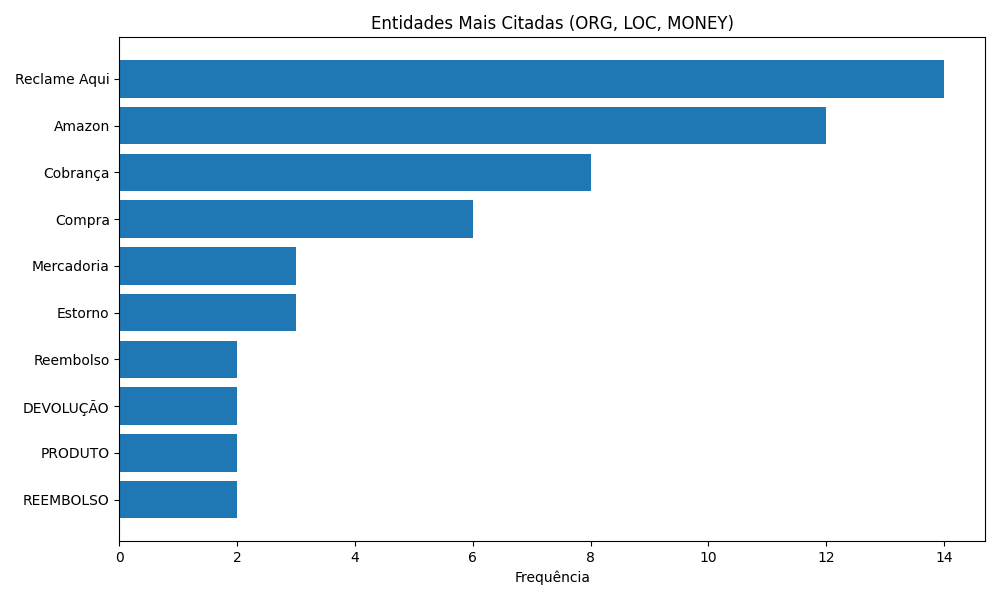

Neste projeto, utilizei técnicas de Processamento de Linguagem Natural (NLP) para identificar automaticamente entidades relevantes em reclamações extraídas do site Reclame Aqui. Trabalhei com o modelo pt_core_news_sm do spaCy para detectar nomes de empresas, localidades e valores monetários.
O dataset foi composto por reclamações públicas. Após o pré-processamento textual, apliquei a extração de entidades nomeadas (Named Entity Recognition - NER). As entidades extraídas foram agrupadas por tipo e frequência.
Gráfico com as entidades mais mencionadas:
Este projeto demonstra como técnicas modernas de NLP podem estruturar grandes volumes de texto. Com isso, é possível automatizar a identificação de padrões, gerar alertas e acelerar análises de atendimento ao consumidor.
← Voltar ao início